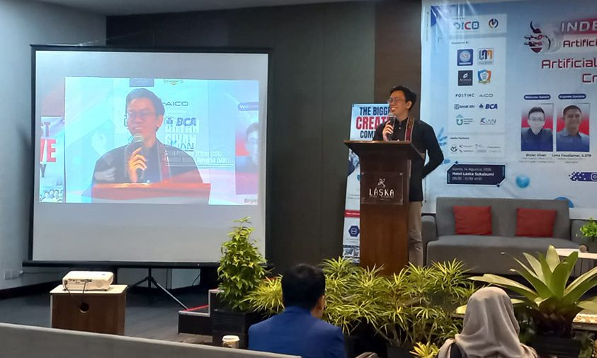

Professional Mentor
Temukan Expert
Temukan Expert
Terbaik di DICO
Koneksi dengan para profesional, praktisi, dan mentor berpengalaman dari berbagai bidang untuk mendukung perkembangan karier dan skill kamu.

EXPERT DICO
Kenali Para Expert Inspiratif di DICO
Dapatkan ilmu, insight, dan pengalaman langsung dari para profesional di bidangnya masing-masing.
Urutkan
Ingin Menjadi Expert di DICO?
Bagikan pengetahuan, pengalaman, dan keahlianmu bersama komunitas DICO.